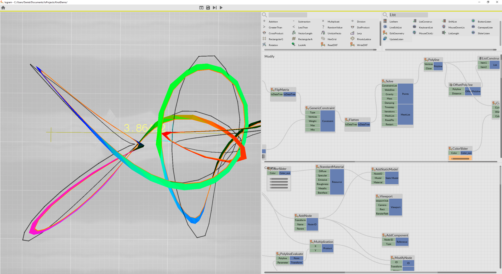
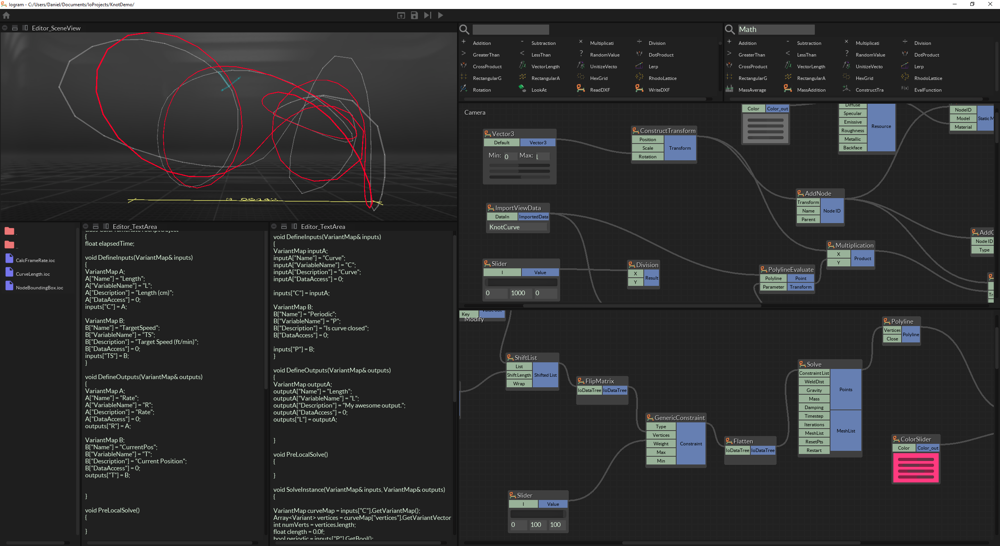
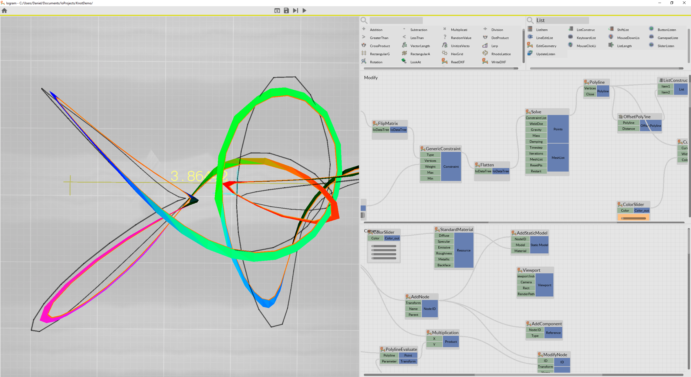
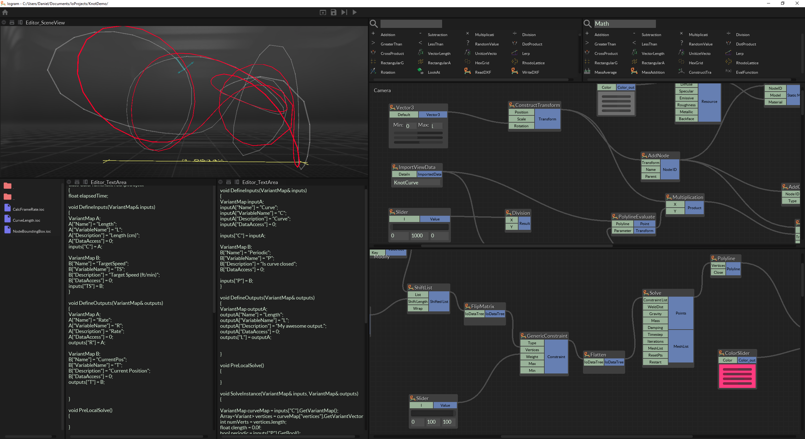

godan
Do you like the uplifting, exuberant, friendly feeling of a Light UI? Or do you prefer that expert, technical, all-business feel of a Dark UI?
(asking for a friend
 )
)



Do you like the uplifting, exuberant, friendly feeling of a Light UI? Or do you prefer that expert, technical, all-business feel of a Dark UI?
(asking for a friend
)



Dark ui is better for me. In my opinion, dark ui helps to concentrate.

Depends on how much time do you spend working with something. But I certainly see my self getting tired ( my eyes actually ) of a bright screen.

I switched to and prefer dark theme for some years now after I got DES. I used to hate the dark theme before that
 .
.

Light UI with solarized theme. Against insomnia, you know…

I’m happy dark themes are becoming more prevalent. Modern screens have very few brightness steps in the darker regions. Black on white is for (e)paper, it makes very little sense to me on screens. I like light grey on dark grey best. Like
etched granite
. To my opinion imagery also look best among dark surroundings (leaving some room to go pitch black).
I like how
Linux Mint
comes with a
dark theme
.

I dislike any mostly monotone theme and prefer dark with bright widgets.
The problem with monotone themes is that you can’t get a reflexive count in the UI. You know that “Scale” is the third set of widgets from the top, but you have to actually think to find “Scale” in a monotone UI. With bright widgets on a dark background your brain just does all of the counting without you knowing.
Time doesn’t fix the “wavering confused mouse” problem either, after 9 months of using a monotone theme I tore out my themes and switched to a UE4 style theme - in exchange my mouse heatmaps have improved and mouse deltas have enjoyed less deviation (wobble/waver = confused user).
I despise UE4’s editor passionately, but their core coloring style is solid. It’s almost like they actually sat down and designed thinking about the fact that screens emit light rather than just “oh this sketch looks good.”


Without hesitation, dark UI.

Dark UI ,Definitely.

Dark, especially if it is something where I will spend long hours.

I prefer dark themes. (It’s one of the many reasons I prefer Linux)
{kind=link}
{kind=link}